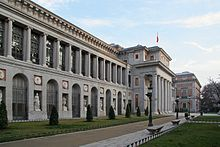
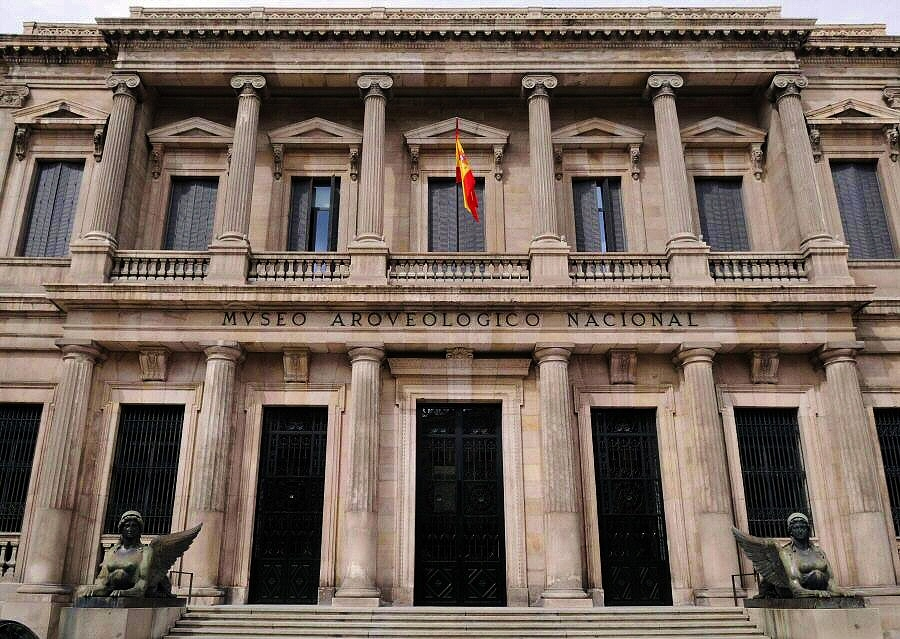
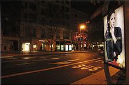
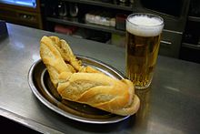

| El Museo del Prado es uno de los museos más importantes del mundo,dedicado fundamentalmente a la pintura. Se dice que no es la pinacoteca más completa, pero sí la más rica por la acumulación de obras maestras. |  |
| El Museo Thyssen-Bornemisza representa una de las mayores colecciones privadas de arte del mundo, adquirida en su mayor parte por el Estado español. | 
|
| El Museo Arqueológico Nacional muestra hallazgos arqueológicos desde la Prehistoria hasta el siglo XIX, especialmente de la Península Ibérica, distribuidos en 3 plantas. |  |
Zona Comerciales
| Hay establecimientos especializados en alta costura de todas las principales marcas internacionales, como Emporio Armani o Gucci, así como de las españolas como Zara, Loewe o Cortefiel. Y de alta joyería, como el de la firma madrileña Carrera y Carrera. También hay multitud de tiendas de ropa informal y deportiva, con presencia de las principales marcas. Es de reseñar la cadena El Corte Inglés, especialmente dedicada a la moda, y que cuenta con centros en los puntos de la ciudad más concurridos. |  |
| En la Plaza Mayor y sus soportales se sitúan todos los domingos puestos de venta de sellos, monedas y de todo tipo de objetos coleccionables. Actualmente es el mayor mercado filatélico y numismático de España. | 
|
Gastronomia
| La gastronomía tradicional de Madrid se engloba dentro de la cocina española en general, y en particular de la gastronomía castellana, de la cual conserva en algunos platos y preparados las características culinarias heredadas de los tiempos de la instalación de la corte de Felipe II en la Villa de Madrid, ciudad Capital de España. Algunas de las elaboraciones más características son el cocido madrileño, los callos a la madrileña, la sopa de ajo, la casquería en general y postres como las rosquillas tontas y listas, los huesos de santo o las torrijas madrileñas. La cocina madrileña siempre se ha sentido muy influida por su característica de ciudad de aluvión, recogiendo costumbres y usos culinarios andaluces, manchegos, extremeños y de otras regiones españolas, especialmente entre los años transcurridos entre 1950 y 1970. |  |
Vida Nocturna
| Durante la década de 1980, Madrid vivió una época de auge contracultural y del ocio nocturno, conocido como «movida madrileña», lo que desde entonces ha posicionado a la ciudad como una de las más conocidas por su vida nocturna, bares y discotecas. A esto se lo conoce popularmente como «marcha» o «fiesta». Se organiza principalmente en el distrito centro, donde se junta todo tipo de estilos y nacionalidades, dando lugar a una rica mezcla, con muchas opciones, hasta altas horas de la madrugada (1:00-7:00h). Existe marcada diferencia entre los locales enfocados al turismo nacional y el internacional. Las zonas tradicionalmente orientadas a la concentración de locales de diversión son la plaza de Santa Ana, en el llamado «Barrio de las Letras», y los barrios de Malasaña, alrededor de la plaza Dos de Mayo, La Latina, Lavapiés, y Chueca. También cabe destacar áreas como Moncloa, la avenida de Brasil o el Barrio de Salamanca. | 
|